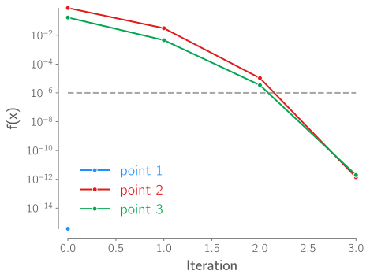
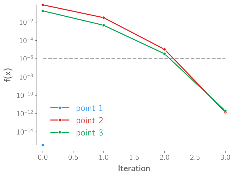

Homework 1 example code solutions#
import numpy as np
import jax
import jax.numpy as jnp
from jax import config
config.update("jax_enable_x64", True)
import matplotlib.pyplot as plt
import niceplots
plt.style.use(niceplots.get_style())
niceColors = niceplots.get_colors_list()
# Force the jupyter notebook to use vector graphics
import matplotlib_inline
matplotlib_inline.backend_inline.set_matplotlib_formats("pdf", "svg")
Problem 2#
# Define the function
def func(x):
return jnp.exp(x) - x**2 - 3
fig, ax = plt.subplots()
x = jnp.linspace(0, 4, 100)
ax.plot(x, func(x), label="f(x)")
ax.axhline(y=0, color="gray", alpha=0.7, linestyle="--")
niceplots.adjust_spines(ax)
ax.set_xlabel("x")
ax.set_ylabel("f(x)")
plt.show()
WARNING: All log messages before absl::InitializeLog() is called are written to STDERR
I0000 00:00:1695232467.448850 2122 tfrt_cpu_pjrt_client.cc:349] TfrtCpuClient created.
No GPU/TPU found, falling back to CPU. (Set TF_CPP_MIN_LOG_LEVEL=0 and rerun for more info.)
def bisection(f, a, b, tol=1e-6, max_iterations=100):
# First, check that a and b do actually bracket a root
fa = f(a)
fb = f(b)
f_history = []
if fa * fb > 0:
raise ValueError("Initial interval does not bracket a root.")
for i in range(max_iterations):
c = (a + b) / 2
fc = f(c)
f_history.append(abs(float(fc)))
print(f"Iteration {i:02d}: x = {c: 7.3e}, f(x) = {fc: 7.3e}")
if jnp.abs(fc) < tol:
return c, f_history
if fa * fc < 0:
b = c
fb = fc
else:
a = c
fa = fc
return (
None,
f_history,
) # Return None as the root if the root was not found within max_iterations
# Initial interval
a = 0
b = 3
root, history = bisection(func, a, b)
if root is not None:
print(f"Root found at x = {root}")
else:
print("Root not found within max_iterations")
ax.plot(root, func(root), "o", color="C1", label="Root")
fig
Iteration 00: x = 1.500e+00, f(x) = -7.683e-01
Iteration 01: x = 2.250e+00, f(x) = 1.425e+00
Iteration 02: x = 1.875e+00, f(x) = 5.194e-03
Iteration 03: x = 1.688e+00, f(x) = -4.417e-01
Iteration 04: x = 1.781e+00, f(x) = -2.356e-01
Iteration 05: x = 1.828e+00, f(x) = -1.198e-01
Iteration 06: x = 1.852e+00, f(x) = -5.852e-02
Iteration 07: x = 1.863e+00, f(x) = -2.697e-02
Iteration 08: x = 1.869e+00, f(x) = -1.096e-02
Iteration 09: x = 1.872e+00, f(x) = -2.904e-03
Iteration 10: x = 1.874e+00, f(x) = 1.140e-03
Iteration 11: x = 1.873e+00, f(x) = -8.832e-04
Iteration 12: x = 1.873e+00, f(x) = 1.282e-04
Iteration 13: x = 1.873e+00, f(x) = -3.776e-04
Iteration 14: x = 1.873e+00, f(x) = -1.247e-04
Iteration 15: x = 1.873e+00, f(x) = 1.716e-06
Iteration 16: x = 1.873e+00, f(x) = -6.151e-05
Iteration 17: x = 1.873e+00, f(x) = -2.990e-05
Iteration 18: x = 1.873e+00, f(x) = -1.409e-05
Iteration 19: x = 1.873e+00, f(x) = -6.187e-06
Iteration 20: x = 1.873e+00, f(x) = -2.236e-06
Iteration 21: x = 1.873e+00, f(x) = -2.597e-07
Root found at x = 1.8731224536895752
Problem 3#
def newton_raphson(f, dfdx, x0, tol=1e-6, max_iterations=100):
x = x0
f_history = []
for i in range(max_iterations):
f_val = f(x)
f_history.append(abs(float(f_val)))
print(f"Iteration {i:02d}: x = {x: 7.3e}, f(x) = {f_val: 7.3e}")
# If f(x) is close enough to zero, we are done
if jnp.abs(f_val) < tol:
return x, f_history
f_prime_val = dfdx(x)
# Otherwise, take a Newton-Raphson step
x -= f_val / f_prime_val
return (
None,
f_history,
) # Return None if the root was not found within max_iterations
def distance(x, x0, y0):
return (x - x0) ** 2 + (np.sin(x) - y0) ** 2
def derivative_distance(x, x0, y0):
return 2 * (x - x0) + 2 * (np.sin(x) - y0) * np.cos(x)
def derivative2_distance(x, x0, y0):
return 2 + 2 * np.cos(x) ** 2 - 2 * np.sin(x) ** 2 + 2 * y0 * np.sin(x)
fig, ax = plt.subplots()
xPlot = np.linspace(-np.pi, np.pi, 100)
yPlot = np.sin(xPlot)
ax.plot(xPlot, yPlot)
ax.set_xlabel("x")
ax.set_ylabel("y")
histFig, histAx = plt.subplots()
histAx.set_xlabel("Iteration")
histAx.set_ylabel("f(x)")
x0 = [np.pi / 2, -0.2, 1.0]
y0 = [4, 0.2, 1.0]
for ii in range(len(x0)):
initial_guess = x0[ii]
f = lambda x: derivative_distance(x, x0[ii], y0[ii])
dfdx = lambda x: derivative2_distance(x, x0[ii], y0[ii])
print(f"\nFinding closest point to ({x0[ii]:.2f}, {y0[ii]:.2f})")
rootX, history = newton_raphson(f, dfdx, initial_guess)
print(f"Closest point is ({rootX:.2f}, {np.sin(rootX):.2f})")
ax.plot([x0[ii], rootX], [y0[ii], np.sin(rootX)], "--", color=niceColors[ii + 1], clip_on=False)
ax.plot(rootX, np.sin(rootX), "o", color=niceColors[ii + 1], label=f"point {ii+1}", clip_on=False)
ax.plot(x0[ii], y0[ii], "o", color=niceColors[ii + 1], label=f"point {ii+1}", clip_on=False)
histAx.semilogy(history, "-o", color=niceColors[ii + 1], label=f"point {ii+1}", clip_on=False)
ax.set_aspect("equal")
niceplots.adjust_spines(ax)
niceplots.adjust_spines(histAx)
histAx.legend(labelcolor="linecolor")
histAx.axhline(y=1e-6, color="gray", alpha=0.7, linestyle="--")
Finding closest point to (1.57, 4.00)
Iteration 00: x = 1.571e+00, f(x) = -3.674e-16
Closest point is (1.57, 1.00)
Finding closest point to (-0.20, 0.20)
Iteration 00: x = -2.000e-01, f(x) = -7.814e-01
Iteration 01: x = 7.685e-03, f(x) = 3.075e-02
Iteration 02: x = 2.648e-06, f(x) = 1.059e-05
Iteration 03: x = 3.506e-13, f(x) = 1.403e-12
Closest point is (0.00, 0.00)
Finding closest point to (1.00, 1.00)
Iteration 00: x = 1.000e+00, f(x) = -1.713e-01
Iteration 01: x = 1.060e+00, f(x) = -4.550e-03
Iteration 02: x = 1.062e+00, f(x) = -3.452e-06
Iteration 03: x = 1.062e+00, f(x) = -1.991e-12
Closest point is (1.06, 0.87)
<matplotlib.lines.Line2D at 0x7f1d9cffba10>
 
Problem 4#
def newton_raphson(f, x0, tol=1e-6, max_iterations=100):
x = x0
f_history = []
dfdx = jax.grad(f)
for i in range(max_iterations):
f_val = f(x)
f_history.append(abs(float(f_val)))
print(f"Iteration {i:02d}: x = {x: 7.3e}, f(x) = {f_val: 7.3e}")
# If f(x) is close enough to zero, we are done
if jnp.abs(f_val) < tol:
return x, f_history
f_prime_val = dfdx(x)
# Otherwise, take a Newton-Raphson step
x -= f_val / f_prime_val
return (
None,
f_history,
) # Return None if the root was not found within max_iterations
def distance(x, x0, y0):
return (x - x0) ** 2 + (jnp.sin(x) - y0) ** 2
derivative_distance = jax.grad(distance)
fig, ax = plt.subplots()
xPlot = np.linspace(-np.pi, np.pi, 100)
yPlot = np.sin(xPlot)
ax.plot(xPlot, yPlot)
ax.set_xlabel("x")
ax.set_ylabel("y")
histFig, histAx = plt.subplots()
histAx.set_xlabel("Iteration")
histAx.set_ylabel("f(x)")
x0 = [np.pi / 2, -0.2, 1.0]
y0 = [4, 0.2, 1.0]
for ii in range(len(x0)):
initial_guess = x0[ii]
f = lambda x: derivative_distance(x, x0[ii], y0[ii])
print(f"\nFinding closest point to ({x0[ii]:.2f}, {y0[ii]:.2f})")
rootX, history = newton_raphson(f, initial_guess)
print(f"Closest point is ({rootX:.2f}, {np.sin(rootX):.2f})")
ax.plot([x0[ii], rootX], [y0[ii], np.sin(rootX)], "--", color=niceColors[ii + 1], clip_on=False)
ax.plot(rootX, np.sin(rootX), "o", color=niceColors[ii + 1], label=f"point {ii+1}", clip_on=False)
ax.plot(x0[ii], y0[ii], "o", color=niceColors[ii + 1], label=f"point {ii+1}", clip_on=False)
histAx.semilogy(history, "-o", color=niceColors[ii + 1], label=f"point {ii+1}", clip_on=False)
ax.set_aspect("equal")
niceplots.adjust_spines(ax)
niceplots.adjust_spines(histAx)
histAx.legend(labelcolor="linecolor")
histAx.axhline(y=1e-6, color="gray", alpha=0.7, linestyle="--")
Finding closest point to (1.57, 4.00)
Iteration 00: x = 1.571e+00, f(x) = -3.674e-16
Closest point is (1.57, 1.00)
Finding closest point to (-0.20, 0.20)
Iteration 00: x = -2.000e-01, f(x) = -7.814e-01
Iteration 01: x = 7.685e-03, f(x) = 3.075e-02
Iteration 02: x = 2.648e-06, f(x) = 1.059e-05
Iteration 03: x = 3.506e-13, f(x) = 1.403e-12
Closest point is (0.00, 0.00)
Finding closest point to (1.00, 1.00)
Iteration 00: x = 1.000e+00, f(x) = -1.713e-01
Iteration 01: x = 1.060e+00, f(x) = -4.550e-03
Iteration 02: x = 1.062e+00, f(x) = -3.452e-06
Iteration 03: x = 1.062e+00, f(x) = -1.991e-12
Closest point is (1.06, 0.87)
<matplotlib.lines.Line2D at 0x7f1d9cb8f390>